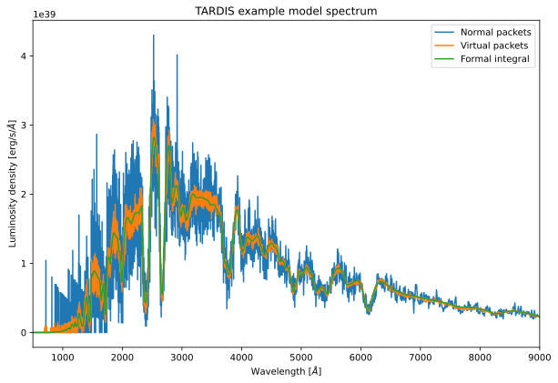

You can interact with this notebook online: Launch notebook
[1]:
from tardis.workflows.standard_simulation_solver import StandardSimulationSolver
from tardis.io.configuration.config_reader import Configuration
[2]:
config = Configuration.from_yaml('../tardis_example.yml')
[3]:
solver = StandardSimulationSolver(config)
Number of density points larger than number of shells. Assuming inner point irrelevant
[4]:
solver.solve()
/home/runner/work/tardis/tardis/tardis/transport/montecarlo/montecarlo_main_loop.py:142: NumbaTypeSafetyWarning: unsafe cast from uint64 to int64. Precision may be lost.
vpacket_collection = vpacket_collections[i]
[5]:
import matplotlib.pyplot as plt
[6]:
spectrum = solver.spectrum_solver.spectrum_real_packets
spectrum_virtual = solver.spectrum_solver.spectrum_virtual_packets
spectrum_integrated = solver.spectrum_solver.spectrum_integrated
/home/runner/work/tardis/tardis/tardis/spectrum/formal_integral.py:384: UserWarning: The number of interpolate_shells was not specified. The value was set to 80.
warnings.warn(
[7]:
%matplotlib inline
plt.figure(figsize=(10, 6.5))
spectrum.plot(label="Normal packets")
spectrum_virtual.plot(label="Virtual packets")
spectrum_integrated.plot(label='Formal integral')
plt.xlim(500, 9000)
plt.title("TARDIS example model spectrum")
plt.xlabel("Wavelength [$\AA$]")
plt.ylabel("Luminosity density [erg/s/$\AA$]")
plt.legend()
plt.show()
<>:10: SyntaxWarning: invalid escape sequence '\A'
<>:11: SyntaxWarning: invalid escape sequence '\A'
<>:10: SyntaxWarning: invalid escape sequence '\A'
<>:11: SyntaxWarning: invalid escape sequence '\A'
/tmp/ipykernel_5051/3606673508.py:10: SyntaxWarning: invalid escape sequence '\A'
plt.xlabel("Wavelength [$\AA$]")
/tmp/ipykernel_5051/3606673508.py:11: SyntaxWarning: invalid escape sequence '\A'
plt.ylabel("Luminosity density [erg/s/$\AA$]")

[ ]: